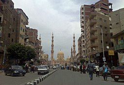
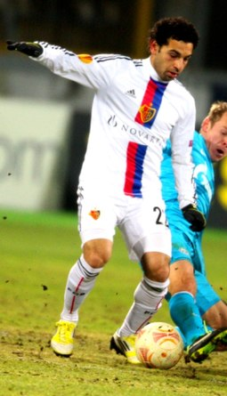
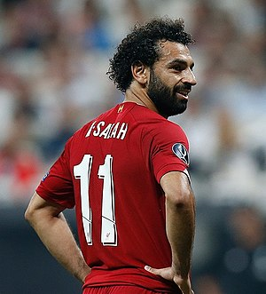

Né dans une famille de trois enfants à Nagrig, un village à proximité de Basyoun, dans le gouvernorat de
Gharbeya, d'une mère au foyer et d'un père employé administratif dans un hôpital, il se découvre très
vite une passion : le football. Fan de Zinédine Zidane, de Ronaldo et de Francesco Totti, il passe la
plupart de son temps libre à jouer au football dans les rues de sa ville. À quatorze ans, il fait tous
les jours un trajet de plusieurs heures en direction du Caire pour y suivre sa formation en club, avant
de retourner sur les bancs de l'école l'après-midi. Salah déclarera « Quand je rentrais le soir, je
devais dormir et le lendemain je devais me réveiller rapidement », il continuera en disant que lorsque
son petit frère avait voulu suivre le même chemin que lui, leur mère l'en avait empêché, ne voulant pas
qu'un autre de ses fils essaie de devenir footballeur10.Lors de ses débuts à 17 ans, Salah est le plus
jeune joueur du championnat égyptien. Il se révèle lors de la saison 2010-2011 et c'est à ce moment
qu'Al Ahly SC et le Zamalek, les deux clubs les plus titrés d'Afrique, tentent de le recruter.
Le 10 avril 2012, le FC Bâle lui fait signer un contrat de quatre ans pour 2 500 000 euros
Revelation au FC Bale

Le 23 juin 2012, Salah inscrit son premier but pour le FC Bâle lors de son premier match. À la fin
du match, son entraîneur, Heiko Vogel (en), déclare que Salah serait un élément essentiel de
l'équipe pour faire mal à l'adversaire pendant la saison12. Salah devient rapidement la star du
club, tout d'abord en étant à l'origine des trois buts contre le FC Thoune13 durant le match de
championnat suisse puis en donnant une passe décisive et en inscrivant son premier but lors du match
contre Lausanne. Il se classe dans le top 15 des meilleurs jeunes attaquants au monde. En 2012, il
est le seul représentant africain au Golden Boy, trophée qui récompense le meilleur espoir de
l'année en Europe. Le 27 novembre 2012, il termine en tête des votes sur internet sur plus de 400
000 votes. Il est donc le vainqueur du trophée sur Internet bien que le vrai vainqueur soit désigné
par une commission officielle14. Il est aussi nommé meilleur espoir de l'année 2012 par la
Confédération africaine de football. Le 28 décembre 2012, dans un entretien avec la chaîne de
télévision égyptienne Melody Sport, Salah confie qu'il voudrait rejoindre le Borussia Dortmund, mais
que le FC Bâle refuserait surement de le vendre, en tant que club jumelé au Bayern Munich, dont les
recruteurs l'ont conseillé au FC Bâle. Salah déclare ensuite : « J'aime le style de Dortmund et je
pense qu'il est similaire à notre façon de jouer avec l'équipe d'Égypte »15. Le 4 avril 2013, lors
du quart de finale aller de Ligue Europa contre Tottenham Hotspur, Salah réalise une performance
remarquée. Le portier adverse, Brad Friedel, déclare à la fin du match : « Il était excellent ». Le
gardien suisse, Yann Sommer annonce quant à lui : « Tottenham ne savait pas comment l'arrêter ».
Salah reçoit même les louanges de son président Bernhard Heusler : « S'il était plus réaliste, je
pourrais rajouter un zéro à son prix ! »16. Le 10 avril 2013, la presse italienne fait état d'un
intérêt de l'Inter Milan pour Mohamed Salah17. Le 15 avril 2013, c'est Manchester United qui
s'intéresse à la star du FC Bâle18. Le 26 avril 2013, le Daily Mail annonce l’intérêt de Tottenham
Hotspur et de son entraîneur, André Villas-Boas, pour le jeune joueur.Le 21 août 2013, lors de la
dernière phase de barrage aller de la Ligue des champions 2013-2014,
Salah inscrit deux buts et obtient un penalty20. Le 27 août 2013, Salah et Bâle se qualifient pour la
C121.
Lors du premier match de groupe, alors que Bâle est en difficulté contre Chelsea, Salah
inscrit le but de l'égalisation. Son équipe remporte le match sur le score de 1-2. Durant le match
retour, Salah marque encore, permet à son équipe de l'emporter 1-0 et de garder espoir en la
qualification pour le prochain tour. Début décembre 2013, Salah est élu meilleur joueur du
championnat suisse 2012-201322. À l'approche du mercato hivernal, Liverpool décide d'accélérer les
négociations pour l'engager23. Fin janvier 2014, Salah est élu meilleur joueur de Super League,
joueur préféré du public et est dans l'Équipe-type de la compétition24.
Periode a Chelsea et rebond a Fiorentina
Le 23 janvier 2014, le club annonce sur son site officiel un accord entre le FC Bâle et Chelsea pour
le transfert du joueur25. Avant même l'officialisation de son transfert, José Mourinho se montre
très heureux quant à la venue du jeune Égyptien chez les Blues, il déclare notamment : « Il est
jeune, rapide, créatif et enthousiaste. Il est le genre de joueur qui est humble sur le terrain,
prêt à travailler pour l'équipe. Salah s'est montré ravi à l'idée de rejoindre Chelsea et je suis
très heureux de l'avoir avec moi dans l'équipe »26. Le 22 mars 2014, Salah inscrit son premier but
en championnat avec Chelsea FC contre Arsenal, lors de la victoire aisée des Blues à Stamford
Bridge, qui scelle définitivement le score de ce match (6-0)27. Le 5 avril lors de sa première
titularisation pour Chelsea face à Stoke City, il réalise un très bon match en marquant un but, en
délivrant une passe décisive et en provoquant un penalty. À la suite de ses bonnes entrées et de sa
très belle prestation, José Mourinho le titularise pour les cinq derniers matchs de la saison.
Le 2 février 2015, Mohamed Salah est prêté jusqu'à la fin de la saison à la Fiorentina dans le cadre
du transfert de Juan Cuadrado à Chelsea28. Il est buteur lors de sa première titularisation avec la
'Fio' le 12 février 2015 face à Sassuolo. Il récidive la journée suivante face au Torino le 22
février. Quatre jours plus tard, il inscrit de nouveau un but, cette fois en Ligue Europa contre
Tottenham Hotspur. Il enchaîne le 1er mars en offrant la victoire face à l'Inter Milan lors de la
25e journée. Le 5 mars 2015, il inscrit son premier doublé avec la Viola lors des demi-finales aller
de la Coupe d'Italie au Juventus Stadium. En offrant la victoire (1-2) à son équipe, la Juventus
concède sa quatrième défaite à domicile depuis l'inauguration de sa nouvelle enceinte29. Un mois
après son arrivée, il a donc été buteur dans trois compétitions différentes et totalise six buts
marqués pour sept matchs joués, une belle prestation de la part du jeune Égyptien.
Le 6 août 2015, Mohamed Salah est prêté par Chelsea à l'AS Rome pour un prêt payant de 5 millions
d'euros avec option d'achat. Alors que la nouvelle saison commence, il fait ses débuts avec le club
romain le 22 août face à Hellas Vérone (1-1)30. Le 11 septembre 2015, la Fiorentina dépose une plainte
auprès de la FIFA, attaquant Chelsea pour une rupture de contrat, mécontent que le joueur soit
finalement vendu par Chelsea à l’AS Rome, alors même qu’il ne s’est pas prononcé pour ou contre la levée
de l’option d’achat. Or, la Fiorentina estimait qu'elle aurait dû bénéficier d'un nouveau prêt pour la
saison 2015-2016. La FIFA rejettera cette plainte.
Le 20 septembre 2015, Mohamed Salah marque son premier but face à Sassuolo et aide la Roma à sauver le
point du match nul. Les dirigeants romains annoncent vouloir activer l'option d'achat d'un montant
estimé à 15 millions d'euros le 1er octobre 201531. Le 25 octobre 2015, l'Égyptien rayonne pour son
retour au Stadio Artemio Franchi où il marque un but face à son précédent club l'ACF Fiorentina. Lors de
cette partie, il est sanctionné à quelques minutes de la fin d'un deuxième jaune synonyme de carton
rouge. À la fin de la saison, Salah est élu meilleur joueur de l'AS Rome de la saison 2015–2016 en
récompense de son incroyable première saison sous les couleurs romaines. Il est le meilleur buteur du
club avec 15 buts marqués et un total de 9 passes décisives toutes compétitions confondues.
Le transfert du joueur est acté définitivement le 3 août 201632 pour un montant de 15 millions d'euros.
Le 6 novembre 2016, Mohamed Salah inscrit un coup du chapeau au Stadio Olimpico qui offre une victoire à
la Roma face à Bologna (3-0 score final), portant le total de but du joueur en Serie A à 8 en seulement
12 matchs. Dans la continuité de sa première saison, l’Égyptien signe de solides performances qui lui
permettent en 31 matchs de championnat de totaliser 15 buts et 11 passes décisives.
Le 22 juin 2017, Mohamed Salah rejoint officiellement le Liverpool FC pour une durée de contrat de cinq ans et
un montant de transfert de 42 millions d'euros, faisant de lui le joueur arabe et africain le plus cher de
l'histoire du football. Il s'agit de surcroît d'un montant de transfert record pour le club anglais, éclipsant
les 41 millions d'euros dépensés pour Andy Carroll en 2011. Salah reçoit le maillot floqué du numéro 11 porté
précédemment par son nouveau coéquipier Roberto Firmino qui jouera à la place avec le numéro 9.

Il marque dès son premier match de Premier League face à Watford et récidive quelques jours plus tard
face à 1899 Hoffenheim en barrage retour de la Ligue des champions. Pour ses performances en août, Salah
est élu Joueur du mois par les supporters de Liverpool. Le 13 septembre 2017, l'Égyptien inscrit son
premier but en C1 sous les couleurs de Liverpool face au Séville FC (2-2). À la suite de sa performance,
il est élu meilleur joueur de la première journée de Ligue des champions. Le 4 novembre, Salah marque un
doublé face à West Ham (4-1). Une performance qu'il réédite lors de la confrontation suivante face à
Southampton (3-0) qui lui permet de porter son total de buts à 9 en 12 matchs et d'être ainsi le
meilleur buteur de Premier league au terme de la journée. Grâce à de solides performances et sept buts
inscrits en quatre matches, Mohamed Salah est à nouveau élu joueur du mois (de novembre) de Premier
League35. Mohamed Salah enchaîne les buts en Premier League35 et marque, lors de la 23e journée, son 21e
but en championnat en éliminant trois joueurs contre Tottenham. Salah devient le deuxième joueur le plus
rapide à atteindre les vingt buts pour Liverpool (lors de sa 26e apparition), derrière George Allan qui
atteint le cap en 19 apparitions en 1895. Il devient également le joueur le plus rapide de l'histoire de
Liverpool à avoir marqué plus de 20 buts. Le 17 mars 2018, avec son quadruplé et premier coup du
chapeau, face à Watford, il est le meilleur buteur de l'histoire des Reds pour une première saison, en
ayant trouvé le chemin des filets à 36 reprises. À la suite de cette performance, l'ancien capitaine de
Liverpool Steven Gerrard déclare : « je pense que nous assistons au début de l'avènement d'un joueur
immense »36. Salah reçoit le surnom d'« Egyptian King » par les partisans de Liverpool, découlant d'un
chant écrit en son honneur et repris sur les airs de Sit Down (en) du groupe anglais James37. Fort d'une
première saison réussie avec Liverpool, l'Égyptien devient rapidement le point focal de l'équipe et le
premier joueur de l'histoire du championnat d’Angleterre à remporter à trois reprises le titre de
meilleur joueur du mois sur une même saison, au cours de laquelle il est sélectionné dans l'équipe de
l'année PFA38,39. Le 21 avril 2018, il marque son 31e but face à West Bromwich Albion qui lui permet
d'égaliser le record de but sur une seule saison en Premier League (record partagé avec Alan Shearer,
Cristiano Ronaldo et Luis Suarez)40. Il bat ce record le 13 mai à Anfield en marquant son 32e but face à
Brighton.
Le 24 avril 2018, en match aller de la demi-finale de la Ligue des champions face à l'AS Roma, Mohamed
Salah réalise un grand match en délivrant deux passes décisives à ses coéquipiers Sadio Mané et Roberto
Firmino et en marquant deux buts (victoire de Liverpool 5-2).
Le 26 mai 2018, lors de la finale de la Ligue des champions opposant Liverpool au Real Madrid, Mohamed
Salah est contraint de sortir au bout de seulement trente minutes de jeu à cause d'une blessure à
l'épaule causée par un accrochage avec le défenseur madrilène Sergio Ramos. Sans lui, son équipe
s'incline 3 buts à 142. S'il s'impose comme l'un des meilleurs joueurs d'Europe lors de la saison
2017-2018, c'est surtout aux yeux du grand public que la reconnaissance est réelle. En termes de
distinction personnelle, il reçoit le prix de joueur africain de l'année en 2017 et est le principal
favori à sa propre succession avec le Sénégalais Sadio Mané pour le trophée 2018. Au classement du
Ballon d'or 2018, et malgré une saison qui l'a vu atteindre la finale de la Ligue des champions, Salah
termine à la sixième place, derrière Lionel Messi, Kylian Mbappé, Antoine Griezmann, Cristiano Ronaldo,
et Luka Modric.
Lors de la saison 2017/2018 , Salah bat le record du plus grand nombre de buts marqué en une saison en
Angleterre avec 32 buts en 38 matches
Lors de la saison 2018/2019, Salah devient le meilleur buteur du championnat (ex-aequo avec Sadio Mané et
Pierre-Emerick Aubameyang) avec 22 buts.
Le 1er juin 2019, il remporte la Ligue des champions de l'UEFA 2018-2019 en ouvrant le score dès la
deuxième minute de jeu sur penalty. Il devient le premier Égyptien à gagner la Ligue des champions. Au
classement 2019 du joueur africain de l'année, il inverse son classement avec son coéquipier Mané, dont
il devient donc le dauphin
Lors de la saison 2019-2020, il dispute son premier Community Shield contre Manchester City. Les Reds
s'inclinent finalement aux tirs au but (4-5).
Il remporte en août 2019 la Supercoupe de l'UEFA contre Chelsea puis la Coupe du monde des clubs, où il
est élu meilleur joueur de la compétition, en décembre 2019
Le 25 juin 2020, Liverpool est sacré champion d'Angleterre, 30 ans après son dernier sacre.
Le 24 octobre 2021, après son triplé face à Manchester United et son incroyable but face à Manchester
City, il devient le meilleur buteur africain de l’histoire de la Premier League en devançant l'ancien
buteur de Chelsea Didier Drogba et ses 104 buts. Avec 23 buts marqués, Mo Salah termine meilleur buteur
de Premier League à l'issue de la saison 2021-2022, à égalité avec l'ailier des Spurs Son Heung-min.
En mai 2022, il annonce qu'il va rester la saison suivante à Liverpool « quoiqu'il se passe avec mon
contrat » qui court jusqu'en juin 2023.
Le 1er juillet 2022, Salah prolonge son contrat jusqu'en juin 2025 avec Liverpool.
Le 6 août 2022, Salah débute la nouvelle campagne de Premier League en marquant un but et en délivrant
une passe décisive lors du match nul 2-2 à Fulham. Avec son huitième but en match d'ouverture de Premier
League, il devient le premier joueur à marquer lors de la première journée six saisons de suite, et
égale le record de buts lors des premières journées de championnat établi par Wayne Rooney, Frank
Lampard et Alan Shearer.
Le 12 octobre, Salah est sorti du banc lors d'un match de Ligue des champions de l'UEFA contre les
Rangers, avant de marquer trois buts en l'espace de six minutes et douze secondes lors d'une victoire
finale sur le score de 7-1. Il a ainsi battu le record de Bafétimbi Gomis du triplé le plus rapide de
tous les temps en Ligue des champions. Avec 38 buts, il est également devenu le meilleur buteur d'une
équipe anglaise, devançant Didier Drogba et Sergio Aguero.
Le 7 janvier 2023, Salah a dépassé Kenny Dalglish pour la sixième place sur la liste des meilleurs
buteurs de l'histoire du club, portant son total pour les Reds à 173 buts en 280 matchs, lorsqu'il a
marqué le deuxième but lors d'un match nul 2-2 en FA Cup contre Wolverhampton à Anfield. Le 21 février
2023, Salah est devenu le meilleur buteur de Liverpool dans les compétitions européennes après avoir
marqué le deuxième but du match de Champions League contre le Real Madrid en huitième de finale aller.
le 5 mars 2023, Salah a marqué deux buts et délivré deux passes décisives contre Manchester United lors
d'une victoire historique de 7-0 et est devenu le meilleur buteur de l'histoire de Liverpool en Premier
League avec 129 buts, dépassant Robbie Fowler qui en a marqué 128. Salah est également devenu le premier
joueur de Liverpool à marquer contre Manchester United lors de cinq matches consécutifs. Avec son
premier but contre Manchester United, Salah devient le meilleur buteur égyptien de tous les temps avec
303 buts en carrière, dépassant Hossam Hassan qui avait marqué 302 buts pour ces club et le pays toutes
compétitions confondues entre 1985 et 2007.
Lors du mercato d’été de la saison 2023-2024, Salah est approché à de nombreuses reprises par club
saoudien de Al-Ittihad, malgré le fait que le club lui propose d’être le joueur le mieux payé au monde,
l’égyptien ne forcera jamais son départ ne voulant pas ternir sa réputation à Liverpool.
En Selection Nationale
En avril 2011, l’Égypte se classe troisième de la compétition de la Coupe d'Afrique des Nations des moins de
vingt ans en Afrique du Sud, compétition dans laquelle Mohamed Salah brille et attire l’attention du FC
Bale.
Mohamed Salah, appelé en sélection nationale après de belles prestations en équipe des moins de 20 ans. Il
honore sa première sélection avec l'équipe nationale d'Égypte le 3 septembre 2011, en étant titularisé face
à la Sierra Leone. Son équipe s'incline toutefois par deux buts à un. Il devient rapidement un des piliers
de l’équipe grâce à sa vitesse et sa technique, il est notamment l'auteur de buts décisifs (contre la Guinée
par exemple). Capable d'évoluer dans les deux couloirs, il élimine souvent son adversaire grâce à sa
vitesse.
Le 22 mars 2013, Salah délivre une passe décisive et inscrit un doublé en une mi-temps face au Swaziland,
pour une victoire finale des Égyptiens 10 à 0. Quatre jours plus tard, lors d'un match qualificatif à la
Coupe du monde de football de 2014 face au Zimbabwe, Salah obtient le penalty de la victoire à la suite
d'une bonne accélération qui oblige le défenseur à commettre une faute en pleine surface. Le vétéran Mohamed
Aboutrika, se charge de transformer le penalty pour une victoire des Égyptiens 2-1.
Le 10 juin 2013, alors que l’entraîneur de l'Équipe du Zimbabwe avait déclaré « Salah est leur meilleur
joueur, mais nous avons travaillé sur la façon de le contenir et il ne devrait pas obtenir d'occasions »,
Salah inscrit un triplé exceptionnel et délivre une passe décisive. Une prestation marquée par son
incroyable but à la 77e minute.
Salah fait partie de la sélection de l’Égypte pour la Coupe d'Afrique des nations 2017 qui se tient au Gabon.
Le 25 janvier 2017, il marque l'unique but de la victoire face au Ghana qui assure à son équipe la première
place du Groupe D. Il aide son équipe à atteindre la finale de la compétition en marquant deux fois et en
faisant autant de passes décisives en six matchs, ce qui lui vaut une nomination dans l'équipe type du
tournoi 2017.
Le joueur égyptien inscrit avec l’Égypte cinq buts lors des qualifications pour la Coupe du monde de la FIFA
2018, incluant les deux buts lors de la victoire décisive 2-1 face au Congo, permettant aux Pharaons
d'empocher leur ticket pour leur première Coupe du monde depuis 1990.
Il fait partie de la liste des 23 joueurs égyptiens sélectionnés pour disputer la Coupe du monde de 2018 en
Russie. Malgré l'élimination de son équipe lors du premier tour, il deviendra le deuxième joueur égyptien
depuis Abdelrahman Fawzi (en 1934) à avoir marqué deux buts sur une édition de la Coupe du monde.
Pendant le Mondial 2018, à la suite de la polémique Ramzan Kadyrov (le 10 juin, le président tchétchène s'est
affiché aux côtés de Mohamed Salah et lui décerne une médaille lors d'un repas sans qu'il soit au courant de
sa venue et ait donné son accord à la Fédération égyptienne de football, ce que n'a pas apprécié le joueur),
il annonce qu'il pense à prendre sa retraite internationale après la compétition.
Or en septembre 2018, Mohamed Salah fait partie du onze de départ lors du match Égypte-Niger (6-0) comptant
pour les éliminatoires de la CAN 2019 qui se déroulera en Égypte. Il marque d'ailleurs un doublé lors de
cette confrontation.
L'année suivante, il figure sur la liste des joueurs sélectionnées pour participer à la Coupe d'Afrique des
nations 2019. Deux ans plus tard, il est de nouveau convoqué pour participer à la Coupe d'Afrique des
nations 2021. En décembre 2023, il est retenu dans la liste des vingt-sept joueurs égyptiens sélectionnés
par Rui Vitória pour disputer la Coupe d'Afrique des nations 2023.